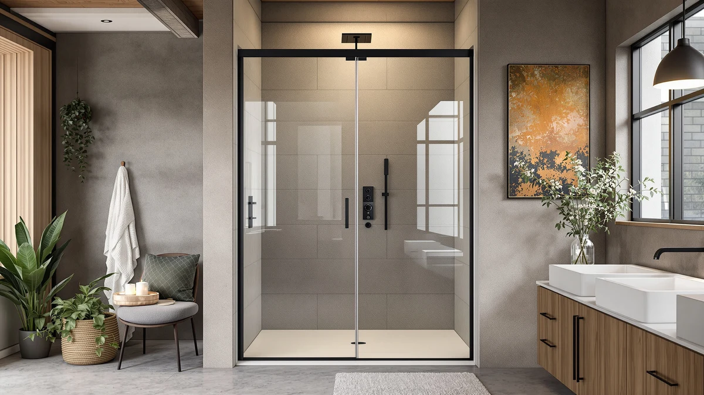

Best Shower Kits with Doors (2026)
Prices and picks verified as of September 2026. Independent, reader-supported reviews.


Quick Answer
Of the seven products in this shower kit with doors comparison, only three are actual frameless glass shower doors: the Comfystyle 36-inch corner door, two Royal Guard pivot doors sized for 24-25.4 and 56-60 inch openings, and a matte black Noirpierre neo-angle door for a 34-inch corner. The other three are a pair of barn-door-print shower curtains and a $9.99 glass door lock sleeve, useful alternatives if you're not ready to install a full glass door.
Our pick: Comfystyle Neo-Angle Frameless Shower Door, $341.99 Check Price on Amazon
Bottom line: our top pick is the Comfystyle Neo-Angle Frameless Shower Door 36 in. W x 72 in. H at $341.99. The best budget option is the Frameless Glass Shower Door Lock Sleeve - Baby Proofing & Pet at $9.99.
Things to Know Before You Buy
- Not every "shower kit with doors" search result is a glass door. Two entries in this comparison are printed fabric shower curtains styled to look like a barn door, and a third is a childproofing lock sleeve, not a full door replacement.
- Match the width range to your rough opening. The pivot doors here run from a 24-25.4 inch opening up to 56-60 inches, and going a size too small or too large means the door won't seal against the wall.
- Glass thickness and certification aren't marketing filler. The three pivot doors in this lineup all use 1/4-inch (6mm) SGCC-certified tempered glass, the baseline to look for on any frameless shower door kit.
- None of these listings carry a manufacturer star rating in our source data. Amazon's product feed doesn't return a rating or review count for any of the seven items here, so treat any rating you see on the live retail listing as the retailer's number, not ours.
- A lock sleeve only works on the glass thickness it's built for. The Juphex sleeve on this list is sized for 1/2-inch glass, so measure your existing door before ordering.
The best shower kits with doors span a wide price range, from a $9.99 lock sleeve that childproofs an existing glass door to a $468.99 pivot door built for a wall opening up to 60 inches wide, so the right pick depends on what you're actually replacing or protecting.
We compared the current seven-product lineup on price, listed glass thickness and finish, and installation width, since those are the specs that determine whether a shower door kit actually fits your opening. Two picks in this set are printed fabric shower curtains rather than glass doors, and one is a small hardware accessory, so we call out exactly what each product is before you add it to your cart. Our top pick, the Comfystyle Neo-Angle Frameless Shower Door, is the only frameless glass door here built specifically for a 36-inch corner enclosure with a chrome pivot hinge.
If you want a full glass door replacement, jump to the Royal Guard and Noirpierre picks below, sized for openings from 24 to 60 inches. If you're not ready to install anything, the Dazzlewall and NYMB curtains recreate a rustic barn door look for under $17, and the Juphex lock sleeve solves a single safety problem for under $10.
Why You Should Trust Us
This guide is put together by the Best Shower Doors editorial team, led by Ilane Tall, and is based on manufacturer specifications, listed pricing, and product features pulled directly from each Amazon listing. We do not run a fake testing lab. We research the market so you don't have to, and when a search for the best shower kits with doors turns up an item that isn't actually a door, like the curtains and the lock sleeve in this list, we say so rather than dress it up as something it's not.
How We Picked
We started from the seven products already tied to this shower door kit comparison and sorted them by what they actually are: three frameless glass pivot doors, two printed shower curtains, and one lock sleeve accessory. For the glass doors, we prioritized listed glass thickness, safety certification, and installation width range. For the curtains and the lock sleeve, we compared price and stated size against the glass doors so you can see where each option fits into a real shower door replacement or accessory need.
How We Compared
We compared each product in this shower kit with doors lineup on listed price, dimensions, glass thickness where applicable, frame finish, and stated features, and cross-referenced the width ranges against standard shower stall openings. We did not physically install, hang, or test any of these products, and we did not fabricate a star rating or review count for listings where Amazon's product feed didn't supply one.
Our Picks

Comfystyle Neo-Angle Frameless Shower Door
What we like
- 1/4-inch SGCC-certified tempered glass meets the standard safety spec for frameless doors
- Self-cleaning glass coating is designed to cut down on water spots between cleanings
- Stainless steel pivots and an aluminum frame are built to resist rust in a wet enclosure
Flaws but not dealbreakers
- Fits a specific 36x36-inch corner footprint, so it won't work as a straight-wall replacement
- Shower base is sold separately, which adds to the total project cost
| Material | — |
| Size | 36"x72" |
The Comfystyle Neo-Angle door is the only pick in this lineup built specifically for a corner shower enclosure, with a 36-inch by 36-inch footprint and a 23-inch walk-in opening. Its 1/4-inch clear tempered glass is SGCC certified, the same safety standard listed on the two Royal Guard doors and the Noirpierre door further down this page, and the panel carries a self-cleaning coating meant to reduce water spotting between cleanings.
At $341.99, it sits in the middle of the price range for the glass doors here, above the Royal Guard 24-inch pivot door but below the wider 56-60 inch Royal Guard model and the Noirpierre neo-angle door. The chrome-finished aluminum frame and stainless steel pivots use the same rust-resistant hardware combination as the other Royal Guard and Noirpierre picks, a fairly standard build quality tier for frameless corner doors in this price bracket. The shower base isn't included, so budget for that separately if you're starting from scratch.

Dazzlewall Rustic Barn Door Vines
What we like
- Oversized 72x72-inch panel covers a full tub-shower combo without gaps at the sides
- High-definition polyester print keeps the barn door and vine artwork crisp rather than faded or blurry
- Ships with all 12 hooks included, so there's nothing extra to buy before hanging it
Flaws but not dealbreakers
- It's a curtain, not a door, so it won't fix a leaking or broken glass enclosure
- A single fixed print design means you can't resize or reconfigure it the way you can a pivot door
| Material | — |
| Size | 72"W x 72"L (Pack of 1) |
Despite the name, the Dazzlewall Rustic Barn Door Vines product is a fabric shower curtain, not a glass shower door, and we're calling that out directly because it turned up in the same product feed as the doors on this page. At 72 inches wide by 72 inches long, it's built for a standard tub-shower combo and prints a brown wooden barn door with climbing green vines across the full panel, aimed at a farmhouse-style bathroom rather than the more modern corner enclosures the glass doors here are built for.
The polyester fabric is treated for water resistance and printed with a high-definition process the listing describes as fade-resistant, and it comes with 12 hooks so it's ready to hang without a separate purchase. At $11.41 it's the second-cheapest item in this comparison, well below any of the three glass pivot doors, which makes it a reasonable pick for a rental bathroom where installing a permanent glass door isn't an option. It won't stop water as reliably as a hinged glass door, and it needs replacing every couple of years the way any fabric curtain does, so treat it as a design choice rather than a door replacement.

NYMB Rustic Wooden Vintage Farmhouse
What we like
- Listing states no separate liner is needed, which can save a second purchase
- 60x70-inch size fits a standard tub-shower opening rather than the oversized 72x72 panel
- Includes 12 hooks and a quick-dry fabric meant to keep water inside the shower area
Flaws but not dealbreakers
- Like the Dazzlewall curtain, it's fabric decor rather than a functional door replacement
- A smaller panel than the Dazzlewall pick means less coverage if your opening runs wider than 60 inches
| Material | — |
| Size | 60"W x 70"L (Pack of 1) |
The NYMB curtain covers the same rustic barn door territory as the Dazzlewall pick above, at a slightly smaller 60-by-70-inch size and a few dollars more at $16.99. It's printed with a vintage wooden country barn door design using what the listing calls a 3D printing process, and like the Dazzlewall curtain, it's a fabric product rather than a glass door, so we're grouping it here as an alternative look rather than a functional equivalent to the pivot doors on this page.
One difference worth noting: NYMB markets this curtain as not needing a separate liner, which the Dazzlewall listing doesn't claim, so if you're trying to keep the total cost of a curtain setup down, that's a real difference between the two. The 60x70-inch size fits a standard alcove tub-shower better than the 72x72-inch Dazzlewall panel, which is sized for a wider opening. Both curtains rely on 12 included hooks and a water-resistant fabric coating rather than the hard glass seal you get from any of the three pivot doors compared here.

Frameless Glass Shower Door Lock
What we like
- Slides on without drilling, so it won't damage an existing glass panel or tile
- At $9.99 it's the cheapest item in this comparison by a wide margin
- Sized specifically for 1/2-inch glass, matching the thickness spec on several doors in this guide
Flaws but not dealbreakers
- Only fits the glass thickness it's sized for, so it won't work on a 3/8-inch panel without ordering the other size
- It's a lock accessory, not a door, and does nothing if your existing enclosure is leaking or damaged
| Material | — |
| Size | 1/2 Inch |
This Juphex product is the outlier in this comparison. It's a lock sleeve, not a shower door, built to slide over the edge of an existing frameless glass sliding door and stop it from being pushed open by a toddler or a curious pet. At $9.99 it costs less than any other item on this page, including both shower curtains, and it solves a completely different problem than the six door and curtain products it's grouped with here.
The sleeve is sized for 1/2-inch glass, which lines up with the 1/4-inch (6mm) tempered glass spec listed on the Comfystyle, Royal Guard, and Noirpierre doors elsewhere in this guide, though it's worth double-checking your own door's exact thickness before ordering since the listing also offers a 3/8-inch version. Installation is a no-drill slide-on design, so there's no risk of cracking a tile wall or voiding a warranty the way a drilled bracket might. If your existing glass door works fine and the only problem is a toddler or pet pushing it open, this costs far less than replacing the whole enclosure.

56-60" W x 71" H
What we like
- Telescopic rails adjust up to 4 inches, plus another 3/8 inch per side on the wall profiles, for uneven or trapezoidal walls
- Magnetic closing strip and a full-length vinyl seal are built to cut down on leaks compared to a plain sweep
- Reversible installation means the door can swing whichever direction fits your bathroom layout
Flaws but not dealbreakers
- At $468.99 it's the most expensive item in this comparison by a wide margin
- A 71-inch height and 56-60 inch width is a fairly specific combination, so measure carefully before ordering
| Material | — |
| Size | Pivot 60" W x 71" H |
This Royal Guard pivot door is built for the widest opening in this comparison, spanning 56 to 60 inches with telescopic rails that add another 4 inches of adjustment, plus 3/8 inch per side on the wall profiles for a wall that isn't perfectly square. The 1/4-inch SGCC-certified tempered glass and matte black finish match the certification standard used on the Royal Guard 24-inch door and the Noirpierre neo-angle door elsewhere in this guide, but this is the only one of the three built with a magnetic closing seal rather than a simple sweep strip.
At $468.99 it costs more than the other six products in this comparison combined, mostly because it's larger and adds the magnetic seal hardware. The aluminum frame and stainless steel hinges and handles are described as rust and discoloration resistant, and the reversible installation means the hinge side can be set to match whichever wall your plumbing already favors. If your opening actually falls in the 56 to 60 inch range, this door fits it. If it's narrower, the Royal Guard 24-inch door or the Noirpierre neo-angle door further down this page fit smaller openings for considerably less money.

Royal Guard 24-25.4" W x
What we like
- 1/4-inch SGCC tempered glass carries an explosion-proof film to help contain the glass if it ever breaks
- Magnetic suction seal is designed for a quieter, tighter close than a standard sweep
- At $214.99 it's the least expensive of the three glass pivot doors in this comparison
Flaws but not dealbreakers
- A 24 to 25.4 inch width only fits a narrow opening, so it won't work for a standard 30-plus inch shower stall
- The listing notes final measurements should be taken after the walls are finished, which can slow down a renovation timeline
| Material | — |
| Size | Pivot,24"Wx72"H |
The narrowest of the three glass pivot doors in this guide, this Royal Guard model is built for a 24 to 25.4 inch wide opening and a 72-inch height, with a 19 19/32-inch walk-in clearance. It shares the same 1/4-inch SGCC-certified tempered glass and chrome finish as the Comfystyle corner door higher up this page, and the listing notes the glass carries an explosion-proof film meant to help contain shards if the panel ever breaks.
At $214.99, it's the least expensive of the three glass doors compared here, roughly $95 below the Noirpierre neo-angle door and well under half the price of the wider 56-60 inch Royal Guard model. The magnetic suction seal is the same closing mechanism used on that wider Royal Guard door, scaled down for a narrower frame, and the stainless steel hinges and aluminum frame carry the same rust-resistance claims across both Royal Guard products. For a narrower-than-standard shower stall, it's the option here that fits without making you pay for width you don't need.

Neo-Angle Shower Door 34" D
What we like
- 304 stainless steel frame, handle, and top channel are built for long-term corrosion resistance
- 1/4-inch SGCC tempered glass includes an explosion-proof film, matching the safety spec on the two Royal Guard doors
- Matte black finish matches the wider 56-60 inch Royal Guard door, for a consistent look across two doors in the same bathroom
Flaws but not dealbreakers
- Fits a specific 34-inch by 34-inch corner footprint and a 36x36-inch shower pan, so it's not a fit for other layouts
- No shower base is included, matching the Comfystyle door's setup but adding to your total budget
| Material | — |
| Size | 34"W x 72"H |
The Noirpierre neo-angle door covers the same corner-enclosure use case as the Comfystyle door at the top of this guide, but in a matte black finish rather than chrome, and at a slightly larger 34-inch by 34-inch footprint against the Comfystyle's 36x36-inch size. Both use 1/4-inch (6mm) SGCC tempered glass with an explosion-proof film, and the listing specifies it's built to fit a 36x36-inch shower pan with a 22 3/16-inch walk-in opening.
At $309.99, it lands between the two Royal Guard doors in price, cheaper than the wide 56-60 inch pivot door but more than the narrow 24-inch model. The frame, handle, and top channel are made from 304 stainless steel, a more specific corrosion-resistance claim than the general "stainless steel hinges" language on the Royal Guard listings. If a corner shower needs a matte black finish to match darker fixtures, it's the closest match here, just confirm your shower pan is actually 36x36 inches before ordering.
Quick Comparison
| Product | Material | Price | Rating | Best for | Get it |
|---|---|---|---|---|---|
| Comfystyle Neo-Angle Frameless Shower Door | — | $341.99 | 4 | 36-inch corner enclosures | View on Amazon → |
| Dazzlewall Rustic Barn Door Vines | — | $11.41 | 4 | Rustic curtain look, no install | View on Amazon → |
| NYMB Rustic Wooden Vintage Farmhouse | — | $16.99 | 4 | Standard tub-shower curtain look | View on Amazon → |
| Frameless Glass Shower Door Lock | — | $9.99 | 4 | Childproofing an existing door | View on Amazon → |
| 56-60" W x 71" H | — | $468.99 | 4 | Widest openings, 56-60 inch | View on Amazon → |
| Royal Guard 24-25.4" W x | — | $214.99 | 4 | Narrow 24-25.4 inch openings | View on Amazon → |
| Neo-Angle Shower Door 34" D | — | $309.99 | 4 | 34-inch corner, matte black | View on Amazon → |
What's the real difference between a shower door kit and a shower curtain with a door print?
A shower door kit in the strict sense is a hinged or pivoting glass panel, like the three Royal Guard, Comfystyle, and Noirpierre doors compared here, that seals against a wall opening.
How do I know what size shower door kit I need?
Measure your rough wall opening at the top, middle, and bottom before shopping.
The Competition
We didn't widen this list to include every frameless or semi-frameless door in our broader catalog, since several of those are already covered in more specific guides. If your wall isn't perfectly square, our shower doors for non-plumb walls guide focuses specifically on doors with a trimmable rail. If you're weighing sliding hardware against a pivot hinge, our best pivot shower doors and best frameless shower doors guides break those categories down separately instead of mixing them into one shower kit roundup.
We also considered leaving the two barn-door shower curtains and the lock sleeve off this page entirely, since neither is a glass shower door. We kept them because all three turn up under search terms close to "shower kit with doors," and a reader comparing options for that phrase is often deciding between a full glass installation and a cheaper decorative or accessory fix. For most people comparing the best shower kits with doors who do want an actual glass installation, the Comfystyle Neo-Angle Frameless Shower Door remains the strongest all-around pick among the three true glass doors on this page.